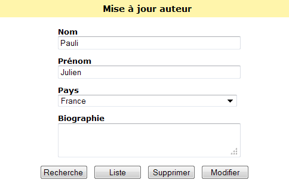
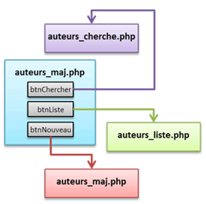
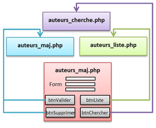
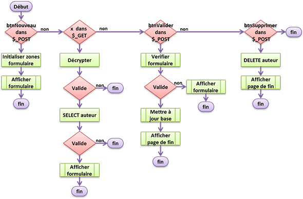

Fig 1 : formulaire de saisie auteur

Fig 3 : liaisons après mise à jour

Fig 2 : liaisons avant mise à jour
Le script auteurs_maj.php est de loin le
plus complexe de la série car il fait beaucoup de choses, en
particulier offrir un formulaire de saisie et effectuer les mises à
jours sur la base de données (INSERT, UPDATE et DELETE).
On commencera par définir le traitement à faire suivant
l'existence de tel ou tel bouton dans le tableau $_POST
ou du paramètre x dans le tableau $_GET.
Suivant le traitement on appellera les fonctions spécifiques
chargées du travail.
Finalement on affichera soit un formulaire de saisie vide
(nouvel auteur), soit un formulaire de saisie rempli (modification
d'un auteur, ou saisie avec erreurs), soit une page signalant la
bonne mise à jour de la base de données.

Fig 4 : organigrame de traitement
Le code du script auteurs_maj.php est à
étudier de près et demande plus de concentration que les exemples
précédents.